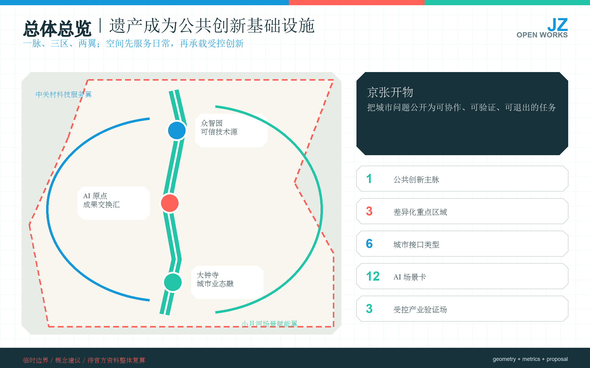
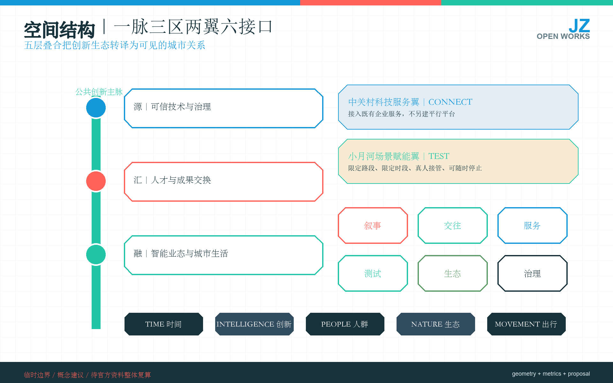
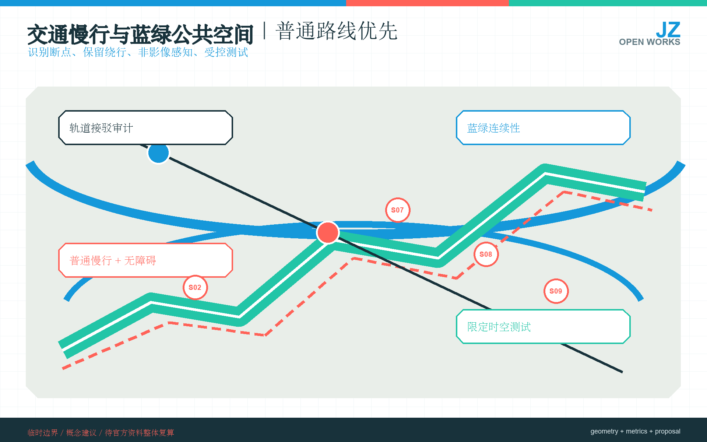
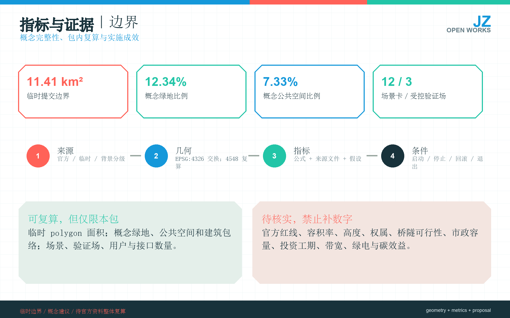

百年京张AI创新带城市设计开源征集
让铁路遗产成为可试、可停、可复核的公共创新基础设施
一条公共创新主脉连接三个重点区域，两条支撑翼把创新转译为六类城市接口。所有空间结论均受事实边界约束：普通服务优先，真人承担责任，试点可以停止与退出。
临时边界 · 概念建议 · 非法定规划可复算指标｜包内一致，不冒充法定数据
总体结构｜一脉、三区、两翼、六类接口
众智园承担可信技术源，AI原点承担成果交换汇，大钟寺承担城市服务融；小月河与中关村科技服务构成生态和产业支撑。
空间图组｜从结构到实施边界





重点区域｜三个角色，三组启动条件
众智园
可信技术源；防洪、消防、权属、安全与保险明确后再启动。
AI原点
成果交换汇；校区许可、无障碍与夜间噪声条件先核实。
大钟寺
城市服务融；轨道、交通、消防与市政条件先核实。
应用场景｜七项近期原型，五项有条件试点
近期优先导览、无障碍、咨询、公众反馈、铁路叙事、开放讨论与社区共创；涉及模型治理、低速机器人等高风险场景，只在专业机构或受控环境中开展。
普通基线
没有AI时服务仍可继续。
真人负责
重大决定保留人工复核与申诉。
可停止退出
启动前写清停止、回滚、维护与退出。
实施条件｜先补资料，再做低风险原型
第一步取得法定边界、权属、控规、交通、市政与运营责任资料；第二步开展不改变法定空间、可撤回且保留普通替代的原型；第三步通过专业复核后再进入工程深化、预算、验收和长期维护。
成果导航｜官方栏目逐项可定位
总览地图三层范围用地分区交通慢行蓝绿公共空间建筑更新项目AI 场景核心指标任务覆盖自检状态来源假设